9. Map Design with Layout Manager
This exercise will show you the basic map layout capabilities of QGIS. It will show how to use the provided tools. Designing maps requires a series of review and evaluation of the map message, intended readers and a balance of applying cartographic rules and violating them! Any state-of-the-art GIS application cannot compensate for a good map design.
It is assumed that you have prepared the data layer symbology in main QGIS application before using the print composer.
Before we begin, a list of commonly used pieces of a map layout is explained succinctly by Krygier and Wood’s Making Maps book.
Elements of a typical map layout
{kind=link}
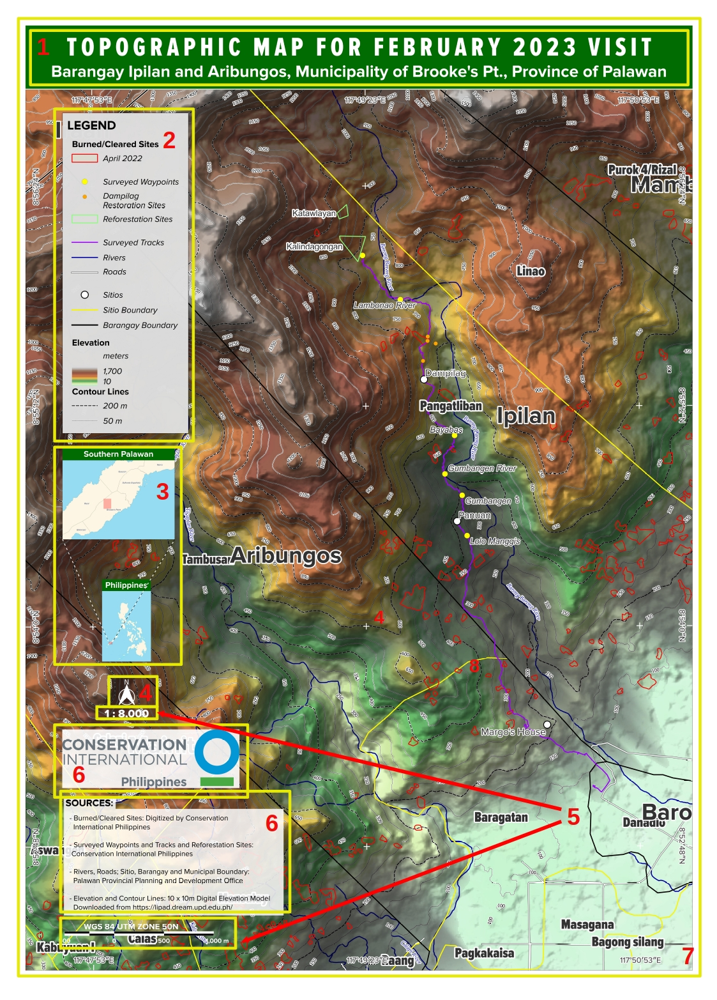
1 - Title - map titles vary, but should attempt to include the what, where and when of the map. Type size should be 2 or 3 times the size of the map type itself. A subtitle, in smaller type, is appropriate for longer or more complex map subjects.
2 - Legend - this is the key to interpreting the map. If it fails, your goals for the map will fail. However, don’t insult your map’s readers by including obvious symbols in the legend.
3 - Inset - this map element enables the audience to locate the main map into larger geographical context. Two insets are needed if we want to relate the area of interest to larger region like country.
4 - Directional indicator - only needed if: 1) the map is not oriented to the north; 2) the map is of an area unfamiliar to your intended audience. Directional indicators can often be left off the map. If included, avoid large and complex directional indicators: they are relatively unimportant and should not be visually prominent.
5 - Scale - large- and medium-scale maps should include a scale indicator, particularly if readers need to make measurements in the map. If your map’s users want to reduce or increase the size of the map the numerical or bar scale, is the best option (it will remain accurate even if scaled). Small-scale maps (of the entire earth or substantial portion of it) should not include a simple visual bar scale because such maps contain substantial scale variations.
6 - Sources, credits - each map should include: data source(s), map maker and date when it was made, map projection and coordinate system information.
7 - Border - a border drawn around the map, title, legend scale, and directional indicator to put together your map. If you add a border, make it narrow, preferably in grey: so that it won’t be too noticeable. Or, a border may not be necessary.
9.1. Print Layout Interface
First, open your previous qgis project named myfirstqgisproject.qgz. Make sure that relevant layers are loaded as seen from the screenshot below. To open the Layout Manager, select Project –> New Print Layout. Create a unique print Layout title then Enter.
{kind=link}
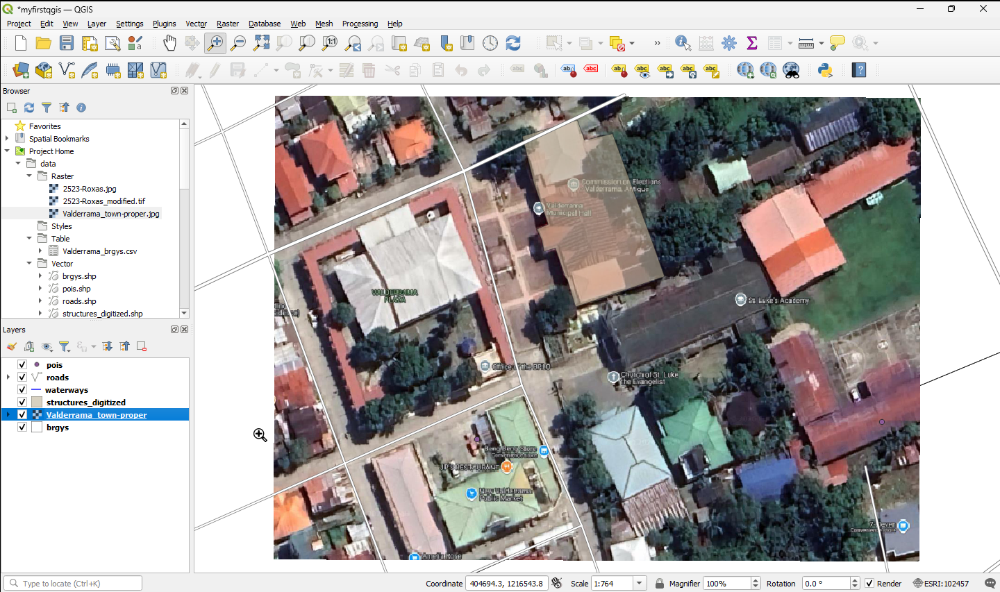
{kind=link}
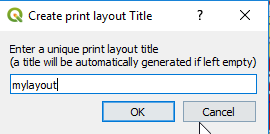
Opening the New Print Layout provides you with a blank canvas. The components of the map composer are explained below:
{kind=link}
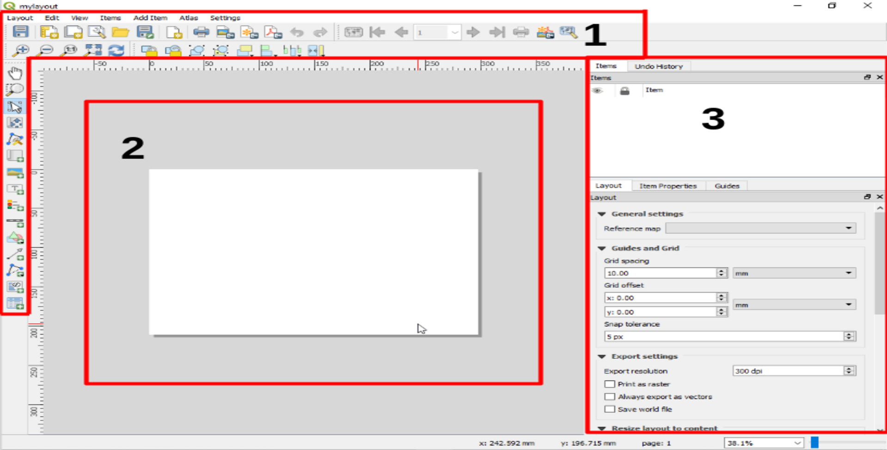
1 - Menus and Toolbars - all tools for adding and arranging map elements, map navigation, export options etc.
2 - Map Canvas - where the user your map and map elements are located.
3 - Right Pane Menu
Items - This is where the layers from QGIS interface and other map elements are arranged. Like in
Layerspane in QGIS interface, the topmost item could be moved to bottom, thus showing the other items above it.Undo History - Shows the history of the most recent commands/actions done in the
Layout.Layout - Shows export settings and reference map.
Item Properties - This is hidden by default. Enable it by right clicking on the map canvas and selecting Item properties.
Guides - Settings to show the guides for the map canvas.
9.2. Map Composition
To setup the Layout map canvas, right click on the canvas and click Page Properties. If you want to add another page on the canvas, click Layout –> Add Pages.
{kind=link}
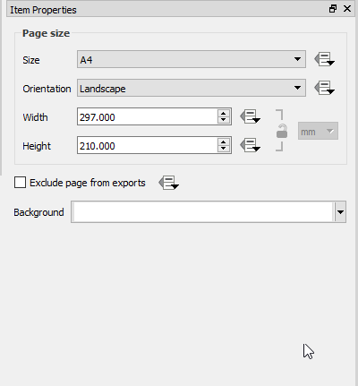
You can setup the map canvas size and orientation as needed.
9.3. Adding a map
1. To add the map canvas, click the Add New Map. from QGIS Map Canvas and drag a rectangle on the map canvas with the left mouse button to add the map. The size for the map canvas can be adjusted just be clicking the canvas’ corner points.
{kind=link}
{kind=link}
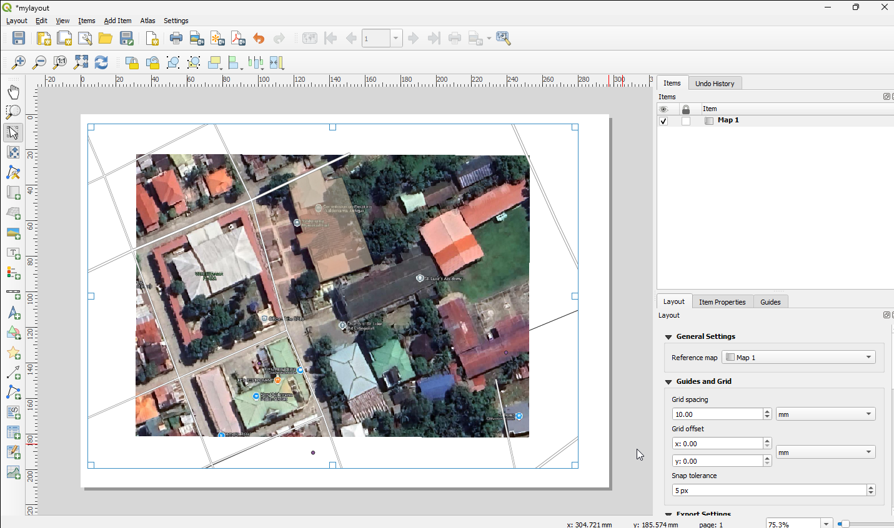
Tip
Make sure to lock/unlock the layers located right under the Layers drop down menu –> Lock layers, Lock styles for layers. This will enable the map layout to remain unchange after unticking the layers from the map canvas layout.
{kind=link}
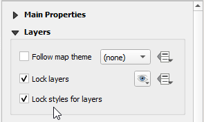
You can adjust the item content of the map by selecting
 Move Item Content and dragging the map content to the desired location.
Move Item Content and dragging the map content to the desired location.
{kind=link}
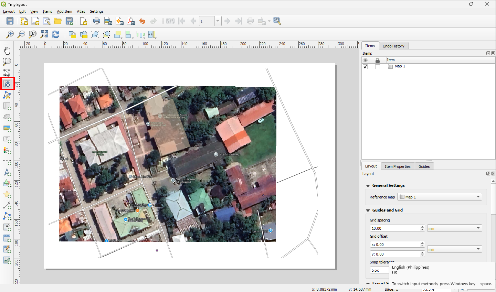
Tip
It is important to select the item itself to adjust the position and size of that selected item. Take note of the difference between the select and move item content.
To update the display if there are any adjustment done in the QGIS window, you can click Set to map canvas extent to adjust the map extent.
{kind=link}
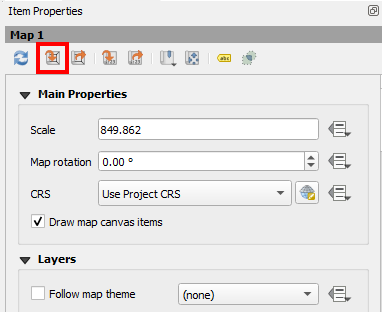
Then click Update Preview.
{kind=link}
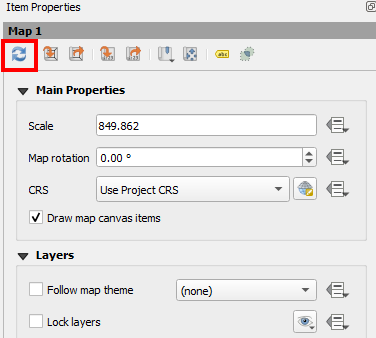
To add grid to the map, expand the Grids properties and see the following settings in the Modify Grid button:
- Under
Grid Type :
Cross; CRS :EPSG:4326; Interval units :Map Units; Interval : x: 0.0008, y :0.0008.- Under Grid frame:
Frame style :
Zebra- Under Draw coordinates:
Format :
Decimal with suffix; Left :Vertical ascending; Right :Vertical descending.
{kind=link}
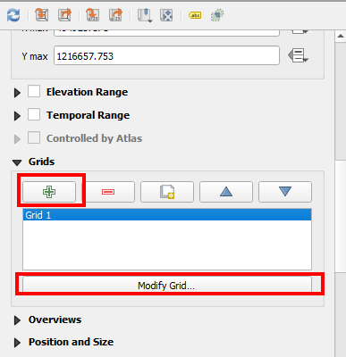
—
{kind=link}
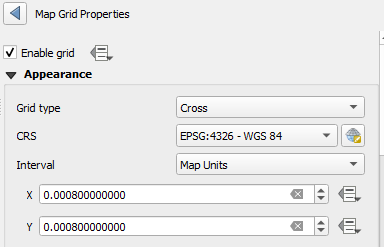
—
{kind=link}
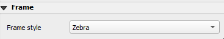
—
{kind=link}
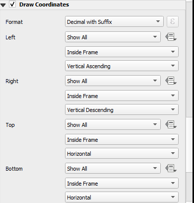
To add inset, simple add another click the Add New Map. Go to Overviews and click the add button and select the Map0. Overview styles can be set accordingly.
{kind=link}
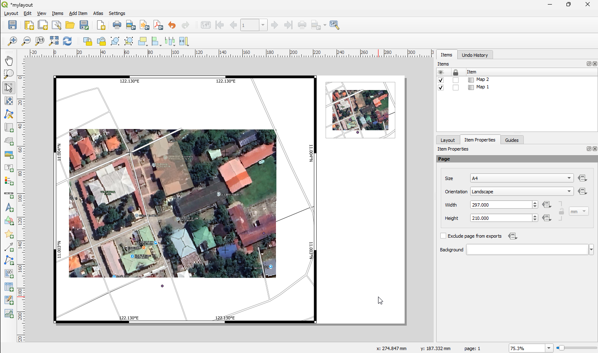
—
{kind=link}
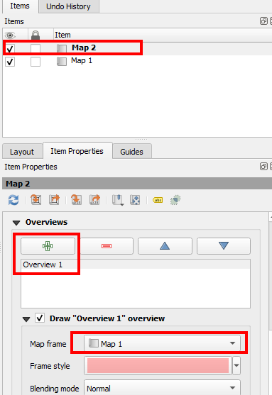
General options for the Map Item tab are as follows:
Map Dialog - the Update preview update the print layout canvas based on QGIS current map canvas view. The Map rotation allows you to rotate the map items while the CRS sets the Coordinate Reference System.
{kind=link}
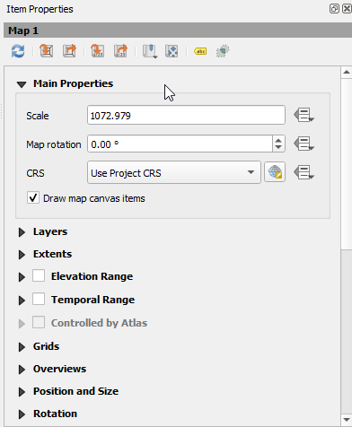
Extent Dialog - map extent area allows you to specify the map extent using Y and X min/max values (depending on your project’s CRS) or clicking the Set to Map Canvass extend button. Click the Update Preview if you changed the view of your map in the main Map View of QGIS.
{kind=link}
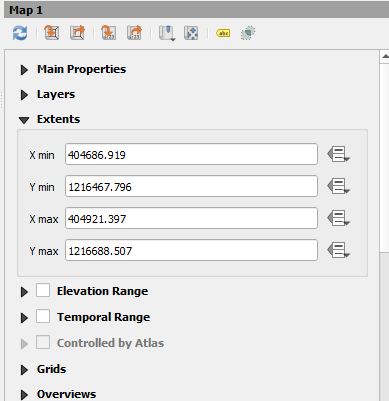
Grid dialog - allows option to add or disable grid in the map. You can specify grid type (line or cross), increment, annotation, colors and font types.
{kind=link}
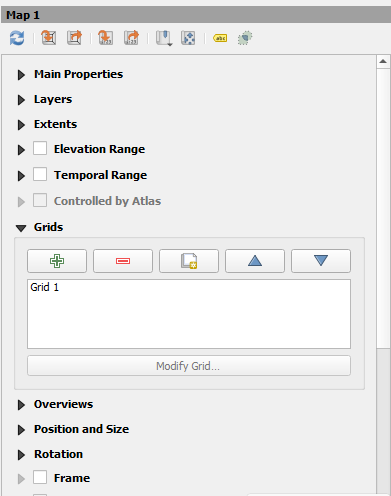
General options dialog - you can define color and outline width for the element frame, set a background color and rendering options for the map item.
{kind=link}
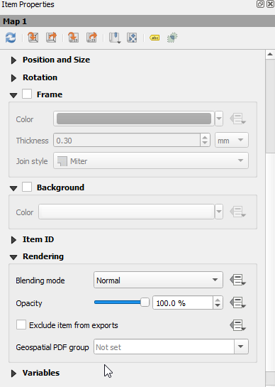
9.4. Adding a Legend
Click the 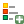
{kind=link}
Legend Item Tab Properties
General dialog - you can specify legend title, font and colors, columns symbol size and spacing.
{kind=link}
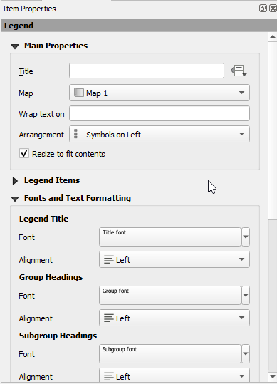
{kind=link}
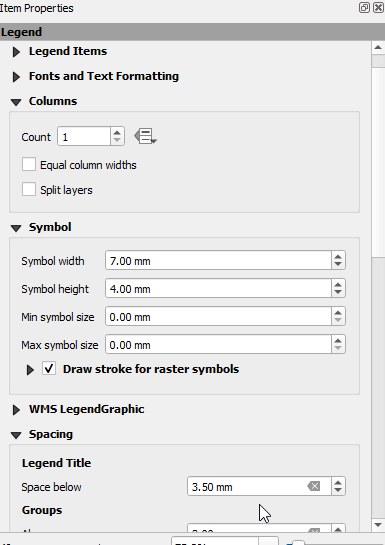
Legend items dialog - you can specify changing item order, edit layer names, remove and restore items of the list.
{kind=link}
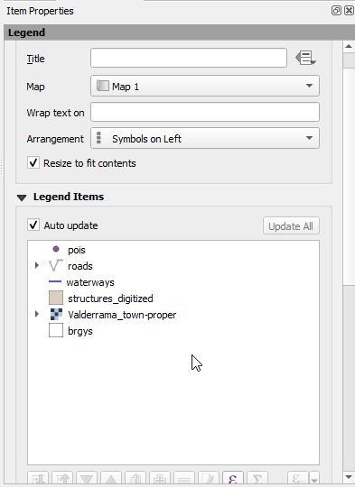
Item options dialog - define color and outline width for the element frame, set a background color and opacity for the map canvas.
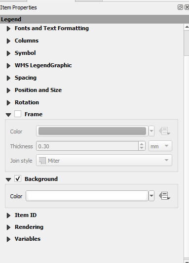
{kind=link}
Tip
While you can change legend items title and order within the Print Layout Legend dialogs, it is better to change them within the main QGIS Map Legend view. This is very useful especially when your are creating several map layouts of the same data layers.
9.5. Adding a Scale Bar
Click the Add new Scalebar for the scale-bar.
{kind=link}
{kind=link}
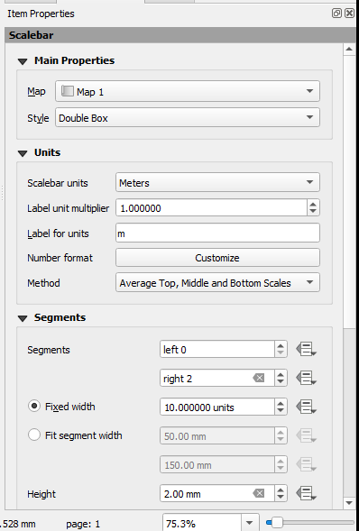
Set the following parameters:
Under Main Properties:
Map : Map 1 Style : Double Box
Under Units:
Scalebar units : Meters
Label unit multiplier : 1.000000
Label for units : m
Scalebar options allow you to specify segment size, fixed width units, fit segment width, height, display options, fonts and colors and, position and size.
9.6. Title and other text boxes
Click the Add New Label for various elements. You can specify font type, size and colors. Use this tool for adding title and other explanatory text.
{kind=link}
9.7. Adding other Map Elements
Print Composer offers additional layout tools similar to other drawing applications. Among these are:
element render ordering (raise or lower element draw order);
adding external images (useful for adding logos and photos).
{kind=link}
{kind=link}
{kind=link}
{kind=link}
{kind=link}
{kind=link}
Explore these tools in composing your map. Full descriptions are available in the QGIS manual.
9.8. Exporting your final map
After adding all the neccessary map component, we can now export the map canvas into .jpg or .pdf.
{kind=link}
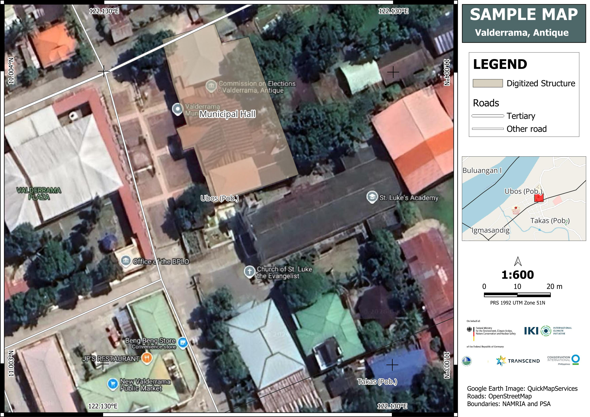
The options for importing your maps are:
export to image or SVG - this is useful if you want your maps embedded in other documents;
To export as image, click the Export as Image. PNG file is the default file type for export.
{kind=link}
print directly to a printer and;
export as pdf.
To export your map to PDF, click the Export as PDF button and provide a filename in the dialog.
{kind=link}
9.8.1. Additional Youtube Videos
The videos below are available offline: